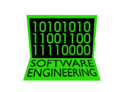

REKAYASA PERANGKAT LUNAK (RPL)Mendidik Generasi Muda Menjadi Developer dan Programmer Profesional  |
TENTANG JURUSAN
|
Rekayasa Perangkat Lunak (RPL) adalah salah satu Kompetensi Keahlian di SMKN 1 Probolinggo yang berfokus pada bidang Teknologi Informasi dan Komunikasi. Jurusan ini mendalami cara-cara pengembangan perangkat lunak mulai dari pembuatan, pemeliharaan, manajemen kualitas, hingga manajemen organisasi perangkat lunak. Siswa RPL dipersiapkan untuk menguasai berbagai bahasa pemrograman, desain web, basis data, serta pembuatan aplikasi berbasis desktop, web, maupun mobile (Android/iOS). |
MATERI KEAHLIAN YANG DIPELAJARI
Materi kompetensi utama yang diajarkan pada jurusan RPL:
| No | Materi Pembelajaran | Keterangan Ringkas |
|---|---|---|
| 1 | Pemrograman Web & Seluler | Mempelajari HTML, CSS, JavaScript, PHP, Framework Web, serta Pemrograman Aplikasi Mobile (Android). |
| 2 | Pemrograman Berorientasi Objek (PBO) | Konsep dan implementasi pemrograman PBO menggunakan bahasa seperti Java, C++, atau C#. |
| 3 | Basis Data (Database) | Pengelolaan dan perancangan basis data relasional menggunakan MySQL/MariaDB dan SQL Server. |
| 4 | Pemodelan Perangkat Lunak | Perancangan alur kerja aplikasi, sistem analisis, dan desain UML (Unified Modeling Language). |
| 5 | Produk Kreatif & Kewirausahaan | Pembuatan produk perangkat lunak nyata yang siap dipasarkan dan dipublikasikan. |
PELUANG KARIR & PROSPEK KERJA
Lulusan jurusan Rekayasa Perangkat Lunak memiliki prospek kerja yang sangat luas, antara lain:
|
|
FASILITAS JURUSAN RPL
| 💻 Lab Komputer RPL | 🌐 Koneksi Internet | 🖥️ Perangkat Modern |
|---|---|---|
| Laboratorium komputer ber-AC yang nyaman dan tenang untuk proses belajar koding. | Jaringan internet dedicated kecepatan tinggi untuk kebutuhan riset dan praktek online. | Unit komputer spesifikasi tinggi pendukung pemrosesan software modern & emulator. |
| ← Kembali ke Daftar Jurusan Utama |